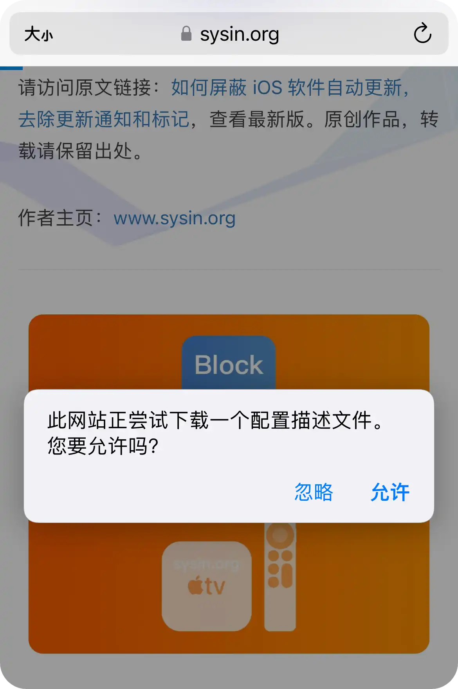
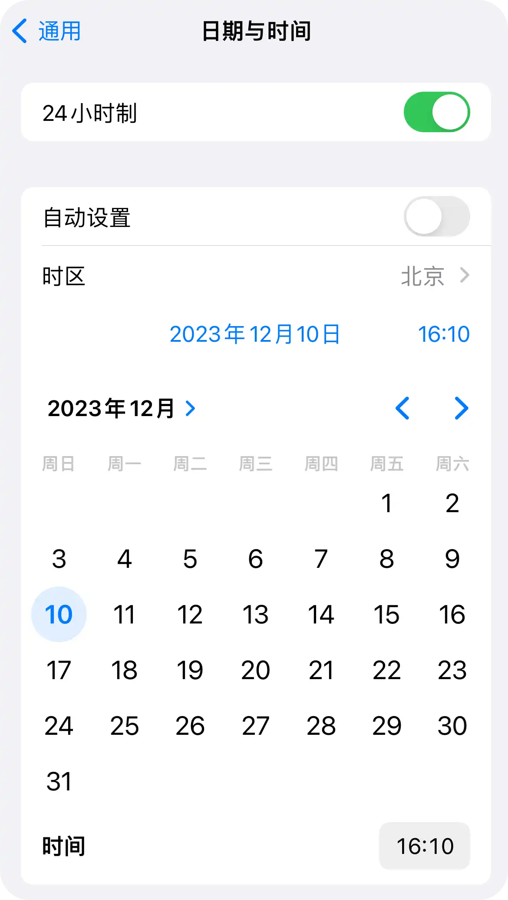

请访问原文链接：如何屏蔽 iOS 软件自动更新，去除更新通知和标记 查看最新版。原创作品，转载请保留出处。
作者主页：sysin.org
现在更新了有效的配置描述文件，请查看 2.2 章节，直接安装即可（有效期至 2026 年 8 月 22 日），如已安装旧的描述文件请根据提示删除。
如何禁用 iPhone、iPad 和 Apple Watch 软件自动更新。
配置描述文件可适用于 iOS 13、14、15、16、17、18 及其对应的 iPadOS 13、14、15、16、17、18 和 watchOS 6、7、8、9、10、11。
更旧版本是否适用？理论上也支持，只不过旧版大概已停更。
2024.11.22，新的有效配置描述文件发布了，可以直接屏蔽更新。
2024.09.18，iOS 18/iPadOS 18/watchOS 11 发布了，同样适用。
2023.09.19，iOS 17/iPadOS 17/watchOS 10 发布了，同样适用。
2023.01.31，更新描述配置文件为 tvOS_16_Beta_Profile，现在继续有效。
2022.09.14，iOS 16 如期而至！强烈建议使用 “恢复模式” 更新，请参看：使用 “恢复模式” 或 “DFU 模式” 来更新和恢复 iOS 固件，屏蔽更新方法对 iOS 16 依然有效。
2021.12.28，更新描述配置文件为 tvOS_15_Beta_Profile，有效期到 2023 年 12 月 15 日，直接点击就可以屏蔽更新。
2021.09.23 更新：支持 iOS/iPadOS 15，watchOS 8。
2021.09.21，iOS 15 已经到来！强烈建议使用 “恢复模式” 更新，请参看：使用 “恢复模式” 或 “DFU 模式” 来更新和恢复 iOS 固件，本屏蔽更新方法对 iOS 15 依然有效。
2021.05.26 更新：更改 “安装过期的描述文件” 操作步骤逻辑，减少设备重启次数。
2021.05.04，iOS 14.5.1 发布，出现了严重的降速门事件，切勿随意更新！遗憾的是，5 月 11 日，Apple 关闭了 iOS 14.5 验证，已经无法升级到 14.5。
2021.04.27，iOS 14.5 发布时，配置描述文件已经过期，但是仍然可以使用。
随着 iOS 14.5 的发布，iOS 14 的软件更新使命基本完成，再无休止的刷版本号已无意义。除非有新的产品发布需要配套的软件更新，那么就安静等待 iOS 15.0 吧。友情提示：建议使用 “恢复模式” 更新，特别是一些相对老旧的机型，强烈建议通过 “恢复模式” 更新 ipsw，而不要使用 OTA 在线更新。
参看：使用 “恢复模式” 或 “DFU 模式” 来更新和恢复 iOS 固件
2020.09.17：描述文件可用于 iOS 14.0，iPadOS 14.0 和 watchOS 7.0。
快速阅读提示：有效期内只需查看 2.2 下载描述文件 (有效期内直接屏蔽) 章节即可完成屏蔽。
1. 关闭自动更新
“设置” ⚙️ > “通用” > “软件更新”，确保自动更新已经关闭。
2. 使用配置描述文件屏蔽更新
2.1 什么是配置描述文件？
配置描述文件 是一个 XML 文件（以 .mobileconfig 结尾），其中包含将设置和授权信息载入到 Apple 设备的有效负载。它会自动配置设置、帐户、访问限制和凭证。这些文件可通过 MDM 解决方案或 Apple Configurator 2 创建，也可手动创建 (sysin)。
由于配置描述文件可被加密和签名，因此您可以将其限制用于特定的 Apple 设备，并阻止除拥有用户名和密码外的任何人更改其中的设置。您还可以将配置描述文件标记为被锁定到设备。
2.2 下载描述文件（有效期内直接屏蔽）
(1) 使用 iPhone 或者 iPad 上用 safari 浏览器打开本页面，点击下面的链接或者上面的橙色带有 “Block OTA” 字样的图片。
描述文件下载地址：tvOS_Beta_Profile.mobileconfig
如果您是在第三方网站看到的此文章，请访问 https://sysin.org/blog/disable-ios-update/ 查看和下载最新的描述文件。

(2) 如果有 Apple Watch 会有安装到 Apple Watch 上的选项。
点击后下载完毕，提示如下图：
(3) 此时打开 “设置” ⚙️ 直接可以看到 “已下载描述文件”，或者 “设置” ⚙️ > “通用” > “描述文件”，点击 “安装”。
点击 “安装” 如下图：
提示输入密码，完成安装。一般会提示重启设备。
如果之前安装过旧版的描述文件，会提示 “描述文件安装失败”，点击 “移除已下载的描述文件” 删除旧版文件即可。
(4) 安装完毕重启设备（如有提示）。
此时软件更新已经屏蔽成功，打开 “设置” ⚙️ > “通用” > “软件更新” 去验证一下吧。
屏蔽原理：下载的是 “tvOS Beta Software Profile” 描述文件，作用是让 Apple 服务器将 iPhone、iPad 或者 Watch 识别为 Apple TV，从而不推送 iOS 的更新。
该配置文件是 Apple 官方提供，官方签名，所以不用担心，这不是什么插件，如果想要继续接收软件更新，删除描述文件即可。
2.3 删除描述文件（恢复软件更新）
iPhone/iPad：
如果需要继续接收软件更新，在 “设置” ⚙️ > “通用” > “描述文件” （或者为 “描述文件与设备管理”）中可查看您所安装的描述文件。点击描述文件即可查看详细信息或者移除。
在 iOS/iPadOS 15 及更新版本中，描述文件的位置略有变化：“设置” ⚙️ > “通用” > “VPN 与设备管理” 下面的 “配置描述文件”。
Apple Watch：打开 iPhone 上的 “Watch” App，“通用” > “描述文件”，点击描述文件即可查看详细信息或者移除。
2.4 安装过期的描述文件
如果描述文件在官方签名的有效期内，屏蔽更新任务已经完成了，仅当证书过期才有必要查看下面的步骤。
如果描述文件过期，其实仍然可以使用特定方法安装：
(1) 使用 iPhone 或者 iPad 上用 safari 浏览器打开本页面，点击下面的链接或者上面的橙色带有 “Block OTA” 字样的图片。
描述文件下载地址：tvOS_Beta_Profile.mobileconfig
如果您是在第三方网站看到的此文章，请访问 https://sysin.org/blog/disable-ios-update/ 查看和下载最新的描述文件。
出现如下提示画面，请保持不动，不要点击 “忽略” 或者 “允许”（此时如果点击会提示 “描述文件错误” 或者 “描述文件已经损坏”）：
(2) 修改系统时间：“设置” ⚙️ > “通用” > “时间与日期”，关闭 “自动设置”，点按下面显示的日期，修改为过期之前的时间（假如网站描述文件 2023.12.15 过期，这里可以修改为 2023 年 11 月 14 日或者之前的任意日期）。
注意：按 < > 调整年份和月份后，再点按一下日期才能生效。

(3) 返回到刚才打开的 safari 浏览器 https://sysin.org/blog/disable-ios-update/ 页面，点击 “允许” 图片，此时已经可以正常下载描述文件，如果有 Apple Watch 会提示选择安装到 Apple Watch 上。
(4) 此时 “设置” ⚙️ 直接可以看到描述文件，或者 “设置” ⚙️ > “通用” > “描述文件”，点击 “安装”，安装完毕提示 “重新启动”。
- 如果是 Apple Watch 点击 “重新启动”，将自动重新启动 Apple Watch；
- 如果是 iOS 设备（iPhone 或者 iPad），此时不要重启 (sysin)；
(5) 恢复时间设置：“设置” ⚙️ > “通用” > “时间与日期”，打开 “自动设置”。
(6) 重启 iOS 设备：“设置” ⚙️ > “通用” > “关机”，然后在按电源按钮开机（如果是屏蔽 Apple Watch，iPhone 不用重启）。
(7) “设置” ⚙️ > “通用” > “软件更新”，此时出现 “iOS 已是最新版本”，大功告成！更新标记（红点数字 1）也自动消失！
“Watch” > “通用” > “软件更新”，效果相同！
2.5 关于报错提示
现在按照上述安装过期描述文件的步骤操作，不会出现报错了。
由于修改了系统时间，访问网站或者系统可能会弹出各种报错提示，直接忽略，操作完成后恢复时间设置并重启即可恢复正常。
比如提示：“您的时钟设置不正确”，点击 “显示详细信息”，“访问此网站”。
比如提示：“无法验证服务器身份”，点击 “取消”。
3. 通过网络屏蔽（不推荐）
该方法效果稍差，网络环境通常无法控制，Apple 官方提供的地址也有变数，仅供参考 (sysin)。
在上述描述文件有效的情况下直接安装描述文件可以有效的屏蔽更新。即使描述文件过期，也可以通过修改时间来安装。在某些集中管理的环境中，可能需要通过屏蔽特定 URL 来禁用自动检测和下载更新。
3.1 去除更新标记（红点数字 1）
通常在 ”Wi-Fi + 充电 “的条件下，系统会自动检测和下载更新，此时在 “设置” ⚙️ > “通用” > “iPhone 存储空间”，找到软件更新文件删除，必要时重启系统，标记即可消失。
打开 “设置” ⚙️ > “通用” > “软件更新” > “自动更新”，打开 “下载 iOS 更新”，关闭 “安装 iOS 更新” ，然后连接 Wi-Fi，连接充电器，软件开始自动下载，此时在 “设置” ⚙️ > “通用” > “iPhone 存储空间”，找到软件更新文件删除，标记即可消失。
但总有一些顽固的更新标记，一般通过以下方法可以去除：
-
方法一：退出 iCloud 登录（前往 “设置” > “[您的姓名]” > 退出登录），还原网络设置（可能需要），标记可以去除，重新登录 iCloud
-
方法二：“设置” ⚙️ > “通用” > “还原” > “还原所有设置”
关于 “还原” 的详细说明：
前往 “设置” ⚙️ > “通用” > “还原”。
选取一个选项：
【警告】 如果选取 “抹掉所有内容和设置” 选项，那么您的所有内容都会被移除。请参阅 抹掉 iPhone。
-
还原所有设置： 所有设置（包括网络设置、键盘词典、主屏幕布局、位置设置、隐私设置和 Apple Pay 卡片）都将移除或还原至默认状态。不会删除数据或媒体。
-
还原网络设置： 所有网络设置都会移除。此外，在 “设置” > “通用” > “关于本机” 中分配的设备名称会还原为 “iPhone”，且手动信任的证书（如网站的证书）会变为不受信任。(由配置描述文件或移动设备管理 (MDM) 安装的 VPN 设置会保留)
3.2 屏蔽更新网址
在网关设备（比如路由器或者防火墙）上屏蔽 iOS 更新网址，或者是通过写 hosts 的方式填写如下条目：
1 | 127.0.0.1 mesu.apple.com |
具体网关设备配置方法可以咨询一下厂商客服或者自行搜索。
必要时可以考虑屏蔽更多的地址，参看下表。
iOS 设备软件更新使用的主机和端口列表：
| 主机 | 端口 | 协议 | OS | 描述 | 支持代理 |
|---|---|---|---|---|---|
| appldnld.apple.com | 80 | TCP | 仅限 iOS | iOS 更新 | — |
| gg.apple.com | 443、80 | TCP | iOS、Apple tvOS 和 macOS | iOS、Apple tvOS 和 macOS 更新 | 是 |
| mesu.apple.com | 443、80 | TCP | iOS、Apple tvOS 和 macOS | 托管软件更新目录 | — |
| ns.itunes.apple.com | 443 | TCP | 仅限 iOS | 是 | |
| updates-http.cdn-apple.com | 80 | TCP | iOS、Apple tvOS 和 macOS | — | |
| updates.cdn-apple.com | 443 | TCP | iOS、Apple tvOS 和 macOS | — | |
| xp.apple.com | 443 | TCP | iOS、Apple tvOS 和 macOS | 是 | |
| gdmf.apple.com | 443 | TCP | iOS、Apple tvOS 和 macOS | 供 MDM 服务器用来识别使用 “被管理的软件更新” 的设备有哪些可用的软件更新 | 是 |
4. 禁用 App Store 自动更新和去除更新标记
4.1 禁用 App Store 自动更新
“设置” ⚙️ > “App Store”，关闭 “App 更新” 和 “自动下载”，如图：
4.2 禁用 App Store 更新标记
“设置” ⚙️ > “通知” > “App Store”，关闭 “标记”，或者直接关闭 “允许通知”。
附录
相关文章：
- 如何屏蔽 iOS 软件自动更新，去除更新通知和标记
- 如何禁止 macOS 自动更新，去除更新标记和通知
- 如何禁止 Ubuntu 22.04 自动更新，删除更新提示和缓存
- 如何禁用 Firefox 自动更新 (macOS, Linux, Windows)
- 如何禁用 Google Chrome 自动更新 (macOS, Linux, Windows)
- 如何禁用 Microsoft Edge 自动更新 (Windows, Linux, macOS)

文章用于推荐和分享优秀的软件产品及其相关技术，所有软件默认提供官方原版（免费版或试用版），免费分享。对于部分产品笔者加入了自己的理解和分析，方便学习和研究使用。任何内容若侵犯了您的版权，请联系作者删除。如果您喜欢这篇文章或者觉得它对您有所帮助，或者发现有不当之处，欢迎您发表评论，也欢迎您分享这个网站，或者赞赏一下作者，谢谢！
 支付宝赞赏
支付宝赞赏
 微信赞赏
微信赞赏
赞赏一下